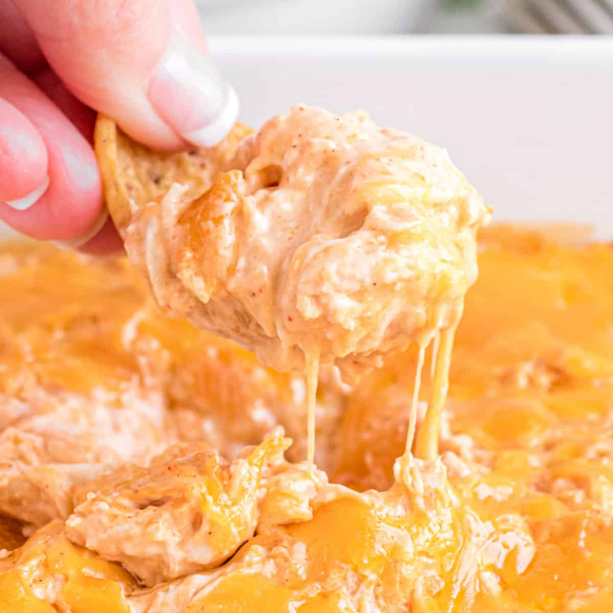

Buffalo Chicken Dip

Description
A spicy yet creamy, delicous chip dip. Perfect for cosy movie nights, superbowl sundays and to make as a housewarming gift. Make sure to make extra if you're
giving it as a gift!
Ingredients
- 1 package Cream Cheese (8oz)
- 1/2 c. Frank's Red Hot Sauce
- 1/2 c. Blue Cheese Dressing or Ranch Dressing
- 1 Can Chunk Chicken (10oz), drained and shredded
- 3/4 c. shredded cheese
Steps
- Mix cream cheese and red hot in a medium pan over medium heat.
- Once melted and mixed together, remove from heat, add the shredded chicken, the dressing and 1/2 c. of the cheese.
- Once blended, pour into an appropriately sized pan, top with the rest of the shredded cheese and cook in a pre-hested 375 oven for 20 min or until bubbling.
- Remove from oven and eat hot.
This dish reheats well and can be kept for a week in the refridgerator.
Return to Home Page
More Plebian Recipes